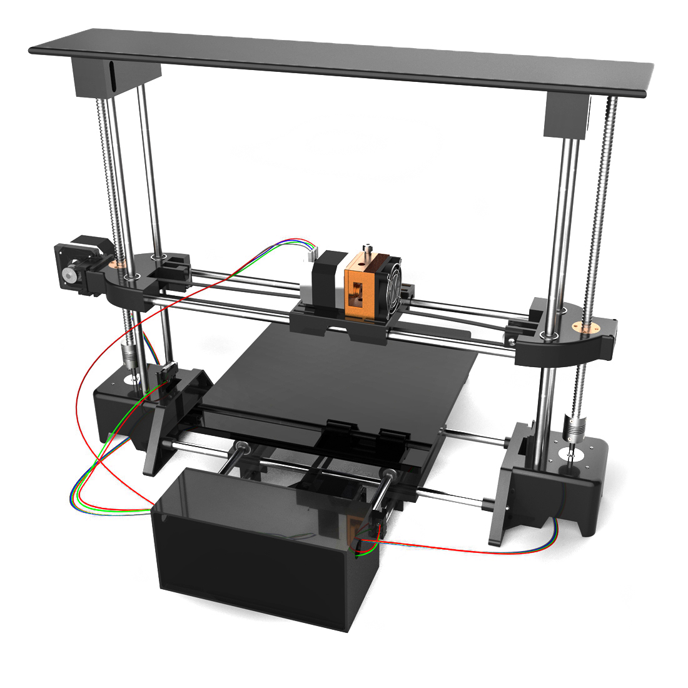
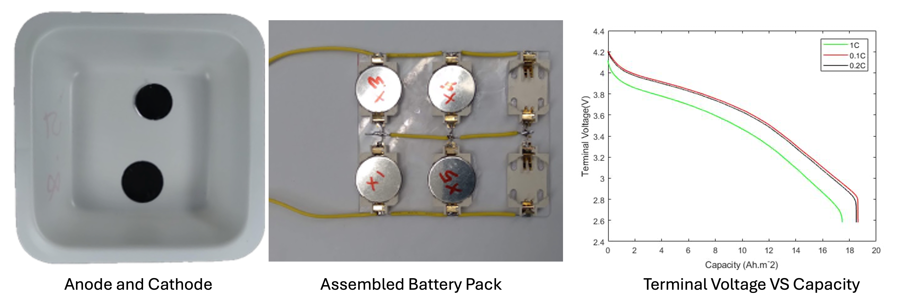
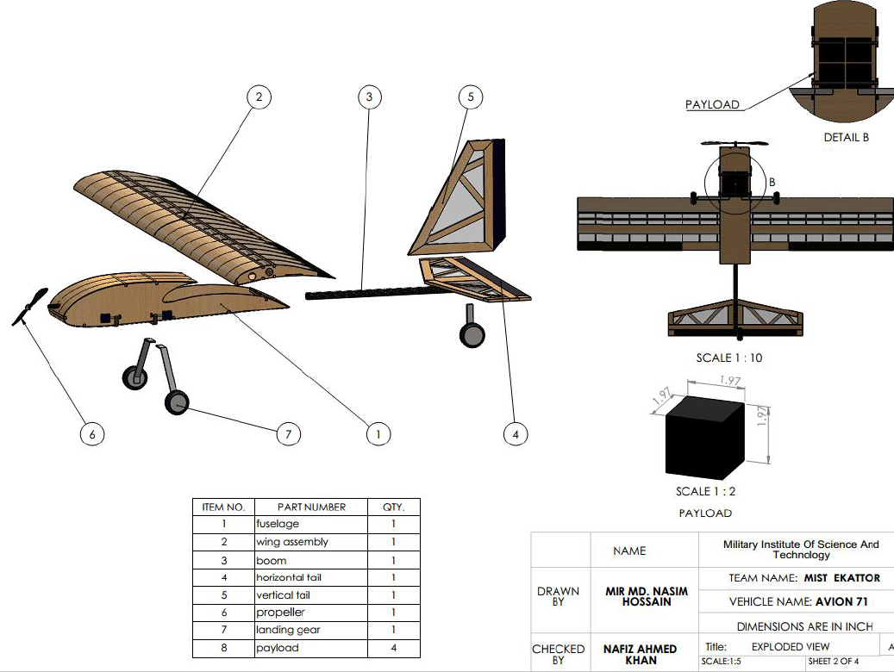
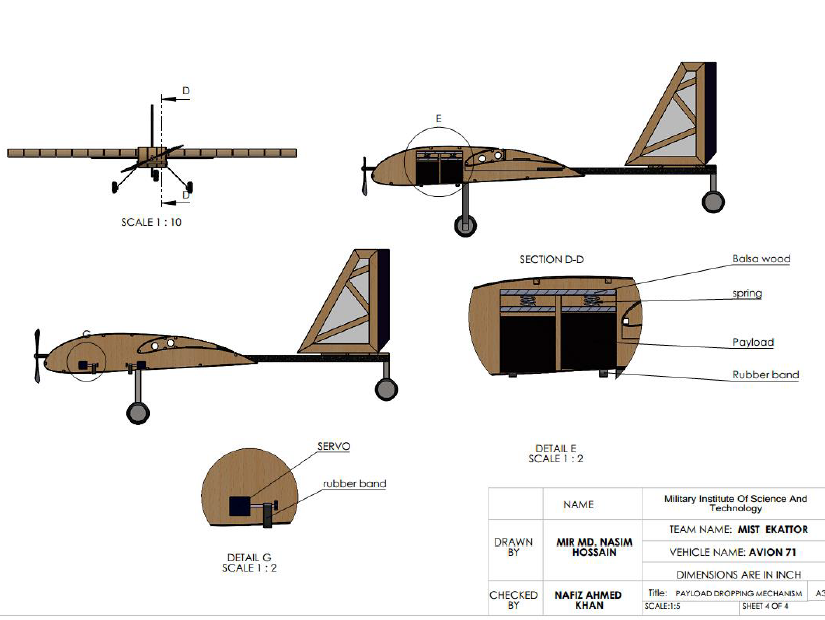
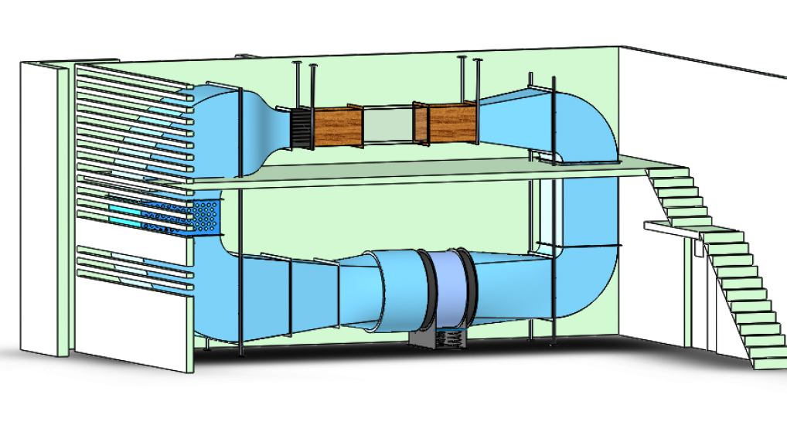
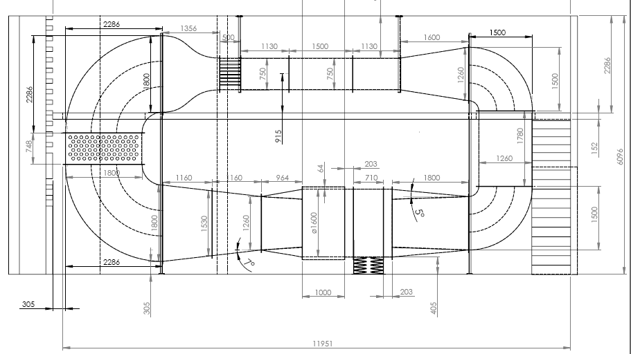

Research Projects
Red Blood Cell (RBC) Resolved Modeling of 3D Angiogenic Microvascular Networks
The wall shear stress (WSS) exerted by blood flowing through microvascular capillaries is an established driver of new blood vessel growth, or angiogenesis. Such adaptations are central to many physiological processes in both health and disease, yet three-dimensional (3D) WSS characteristics in real angiogenic microvascular networks are largely unknown. This marks a major knowledge gap because angiogenesis, naturally, is a 3D process. This project reconstructs in vivo angiogenic microvascular networks in 3D from imaging data and runs high fidelity simulations resolving over 1500 deformable red blood cells using an in house Immersed Boundary Method (IBM) based solver on HPC clusters. Red blood cell membranes are modeled as hyperelastic and are two way coupled with the surrounding fluid flow, capturing how each cell deforms under flow while also influencing the flow around it. Specifically, we:
- Revealed previously unknown in vivo characteristics, including unique 3D wall shear stress (WSS) and wall shear stress gradient (WSSG) patterns
- Identified vessel to vessel heterogeneity, WSS hot and cold spots, and RBC effects at sub endothelial length scales
- Characterized time dependent WSS fluctuations across vessel diameters on RBC timescales
Here is the link of the published paper: Function, Vol. 4, Issue 6
Hemodynamics Characterization of Tortuous Microvessels
Tortuous microvessels are characteristic of microvascular remodeling associated with numerous physiological and pathological scenarios. Three-dimensional (3D) hemodynamics in tortuous microvessels influenced by red blood cells (RBCs), however, are largely unknown, and important questions remain. Is blood viscosity influenced by vessel tortuosity? How do RBC dynamics affect wall shear stress (WSS) patterns and the near-wall cell-free layer (CFL) over a range of conditions? The objective of this work was to parameterize hemodynamic characteristics unique to a tortuous microvessel. Specifically, we::
- Identified up to a 26 percent increase in apparent viscosity due to vessel tortuosity compared to straight vessel flow
- Revealed reduction of the Fahraeus effect in tortuous geometries relative to straight vessels
- Characterized the dependence of hematocrit and shear rate on wall shear stress and cell free layer thickness
Here is the link of the published paper: Microcirculation, Vol. 31, Issue 7
Wall Shear Stress (WSS) Estimation of Angiogenic Sprouts
Angiogenesis, characterized by endothelial cell sprouting of new blood vessels off existing vessels, is a common denominator for normal physiological function and multiple diseases. Although it is generally accepted that local microvascular hemodynamics and wall shear stress (WSS) influence endothelial dynamics associated with capillary sprout growth, the current understanding is largely based on correlative observations and does not consider actual shear stress values affected by 3D details and red blood cell (RBC) flow present in vivo. To address this gap, we use 3D RBC-resolved simulations and digital reconstructions of in vivo blood vessel sprouts to quantify time-dependent 3D WSS characteristics experienced within sprouts. Specifically, we:
- Revealed previously unknown WSS temporal fluctuations along sprout length, caused by unsteady movements of RBCs in the host vessel
- Identified how red blood cells entering a sprout can further amplify wall shear stress variation, from as much as 4 dyne/cm2 without an RBC present to as much as 13 dyne/cm2 when rbcs enter
- Identified dependence of temporal WSS on sprout length, host vessel diameter, hematocrit, and flow strength
Here is the link of the published paper: Biophysical Journal, Vol. 125, Issue 5
Previous Projects
FDM 3D Printer Design & Development

Led the mechanical and system level design of a commercial FDM 3D printer from concept through prototype and into production. Key contributions include:
- Designed the full mechanical system in SolidWorks, including the frame, motion system, and extruder assembly
- Redesigned the print bed and selected a cost effective extruder, improving first layer adhesion and reducing warping, while enabling layer heights up to 0.4 millimeters
- Implemented a three point bed leveling system, improving alignment accuracy and reducing assembly time by about 30 percent
- Coordinated manufacturing planning, component sourcing, and injection mold design with the toolmaker
- Produced the complete drawing and bill of materials package, and created photorealistic renderings in KeyShot that were later used as the official product image
- Collaborated with the marketing team on product documentation and CAD based renderings, contributing to a 20 percent increase in product sales
Skills Applied: SolidWorks, KeyShot, Mechanical Design, Product Development, Manufacturing
Battery Modeling & Experimental Validation

Developed and experimentally validated computational models for lithium ion battery performance, combining physics based simulation with hands on cell fabrication and testing:
- Fabricated lithium ion coin cells and assembled small scale battery packs for experimental testing
- Measured voltage time profiles through controlled charge discharge experiments
- Calibrated and optimized a Pseudo Two Dimensional (P2D) electrochemical model in COMSOL Multiphysics
- Validated model predictions against experimental data with high accuracy
- Used the validated model to predict battery behavior under untested operating conditions
Skills Applied: COMSOL Multiphysics, Experimental Design, Model Calibration, Multiphysics Modeling
AVION 71 Fixed Wing UAV Design


Led the CAD design of AVION 71, a fixed wing unmanned aerial vehicle developed for an undergraduate engineering competition.
- Led the detailed CAD design and assembly of the complete airframe in SolidWorks, including wing, fuselage, and control surfaces
- Designed a payload dropping mechanism and integrated it into the airframe assembly
- Produced detailed drawings of each part along with the complete bill of materials
- Performed aerofoil CFD analysis in ANSYS Fluent to evaluate lift, drag, and flow characteristics
Skills Applied: SolidWorks, ANSYS Fluent, CAD Design, Mechanical Design, CFD Analysis
Closed Loop Subsonic Wind Tunnel Design


Designed a complete closed loop subsonic wind tunnel with a 750 by 750 mm test section, intended to produce steady, uniform airflow for aerodynamic testing and research.
- Designed every subsystem, including the contraction cone, twin diffusers, four corner sections with guide vanes, honeycomb flow straightener, fan section, and silencer
- Designed the contraction cone using the Bell Mehta fifth order polynomial method with a contraction ratio of about 5.76, accelerating flow into the test section while avoiding boundary layer separation
- Selected a 1600 mm diameter axial flow fan paired with a variable speed controller, allowing test velocity to be adjusted to the desired condition up to the maximum of 106 m/s
- Selected materials for each component based on cost, weight, and manufacturability, including mild steel sheet for the main tunnel body and plexiglass for the test section to allow visualization
- Produced complete cost estimation and detailed assembly drawings for the full system
Skills Applied: SolidWorks, Aerodynamic Design, CAD Design, Mechanical Design, Cost Estimation